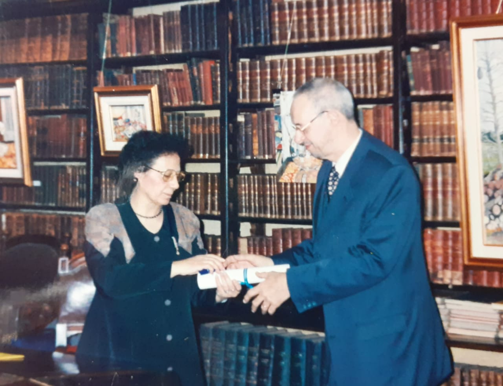

como ya antes mencioné mi abuelo fue un muy buen alumno lo que lo llevo muy buenas oportunidades laborales. Él es profesor licenciado en psicología y profesor universitario trabajando 30 años en la UBA como profesor escalando puestos desde ayudante hasta profesor titular y se jubiló como profesor. En paralelo trabajó en varias reparticiones como experto, trabajando en UNESCO (La Organización de las Naciones Unidas para la Educación, la Ciencia y la Cultura) la OEA(Organización de los Estados Americanos en proyectos de educación) o en la DGI(dirección general impositiva) especializados en metodología de la investigación y habiendo hecho una especialización en Inglaterra sobre metodología de investigación en ciencias sociales.
